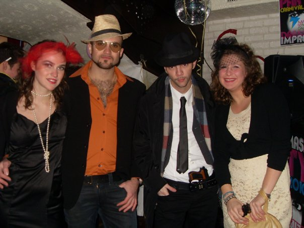
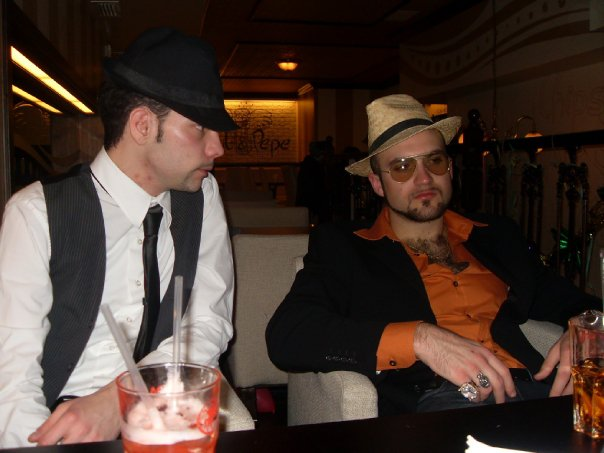

La Torre Velasca colorata di rosso svetta nel paesaggio
serale e notturno di Milano: uno dei simboli della città
trasformato in un’icona pop, con una grande batteria di apparecchi
illuminanti, in occasione del “Fuori Salone” 2016 di Interni-Mondadori.
Come assistente di CastagnaRavelli mi sono occupata della realizzazione
dei render e del materiale esplicativo da presentare alla soprintendenza di Milano.
Ho seguito lo sviluppo tecnico ed artistico del progetto, partecipando a riunioni,
prove luci e montaggio.
Torre Velasca
Milano - xx-xxx-20xx
